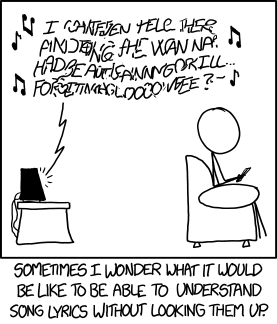

It's a place where all searches end! We have a large, legal, every day growing universe of lyrics where stars of all genres and ages shine.

(C)Kehte hain khuda ne iss
(Am)Jahan mein sabhi ke liye
(C)Kisi na kisi ko hai
(Am)Banaya har kisi ke liye
(F)Tera milna hai uss rab ka ishaara maanu
(G)Mujhko banaya tere jaise hi kisi ke liye
(C)Kehte hain khuda ne iss
(Am)jahan mein sabhi ke liye
(C)Kisi na kisi ko hai
(Am)banaya har kisi ke liye
(F)Tera milna hai uss rab ka ishaara maanu
(G)Mujhko banaya tere jaise hi kisi ke liye
(C)Kuch toh hai tujhse raabta
(Am)Kuch toh hai tujhse raabta
(C)Kaise hum jaane hume kya pata
(Am)Kuch toh hai tujhse raabta
(F)Tu humsafar hai, phir kya fikar hai
(G)Jeene ki wajah hi yahi marna issi ke liye
(C)Kehte hain khuda ne iss (Am)jahan mein sabhi ke liye
(C)Kisi na kisi ko hai (Am)banaya har kisi ke liye
(Am)Meharbaani (C)jaate jaate
(F)Mujh pe kar (C)gaya
(Am)Guzarta sa (C)lamha ek
(F)Daaman bhar (G)gaya
Tere (F)nazara (C)mila
Roshan (Am)sitaara (G)mila
Takdeer (F)ki kashti(G)yon ko
(Am)Kinara (G)mila
(C)Sadiyon se tarse hai (Am)jaisi zindagi ke liye
(C)Teri sauhbat mein (Am)duaayein hain ussi ke liye
(F)Tere milna hai uss rab ka ishaara maanu
(G)Mujhko banaya tere hi jaise kisi ke liye
(C)Kuch toh hai tujhse raabta
(Am)Kuch toh hai tujhse raabta
(C)Kaise hum jaane hume kya pata
(Am)Kuch toh hai tujhse raabta
(F)Tu humsafar hai, phir kya fikar hai
(G)Jeene ki wajah hi yahi marna issi ke liye
(C)Kehte hain khuda ne iss
(Am)jahan mein sabhi ke liye
(C)Kisi na kisi ko hai
(Am)banaya har kisi ke liye....
Strumming Pattern :DUUDUUD
Here, up shuld be played with mutting effect
..........Am................G.....................F........E.....
Gulabi aankhe, jo teri dekhi,Sharabi ye dil, ho gaya
................Am..................G........................F..........E...
Sambhaalo Mujko, O mere yaaro, Sambhalna mushkil, ho gaya
...........Am.................F...................G..................E
Dil mein mere, khawab tere,Tasveere jaise ho deewar pe
...........Am.................F...................G...................E
Tujh pe fida, mai kyu hua, aata hai gussa mujhe pyaar pe
............Am...........................G
Main loot gaya, maan ke dil ka kaha
........................F............................E
Main kahi ka na raha, kya kahu main dilruba
.............Am................G.......................F........E..
bura ye jaadu, teri aankhon ka, ye mera katil hogaya